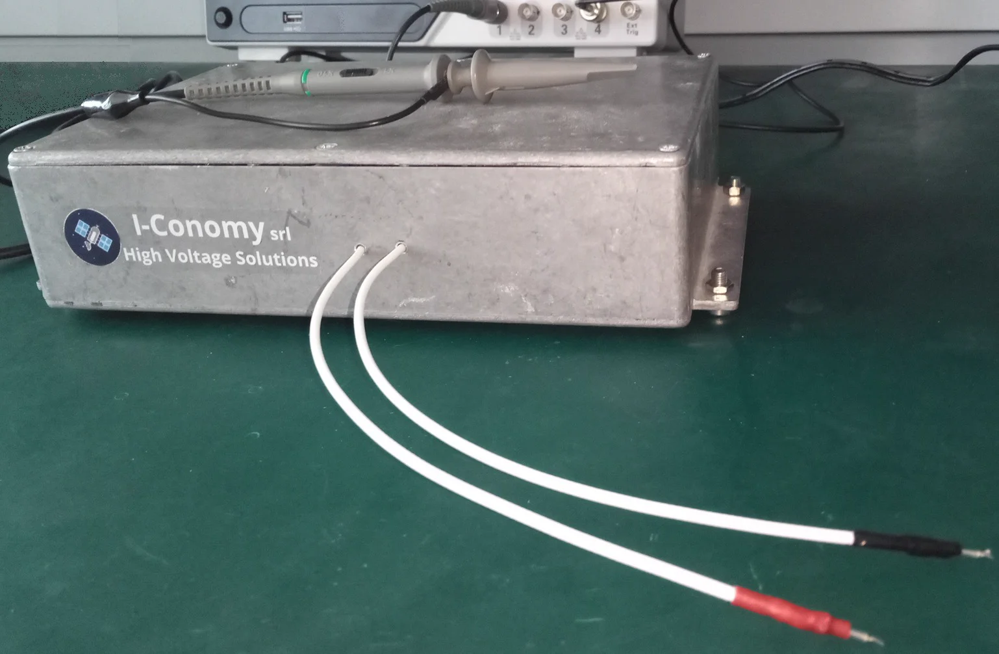

Jesteśmy jedną z niewielu firm na świecie zdolnych dostarczyć pełną gamę standardowych wysokonapięciowych przetwornic DC/DC do zastosowań kosmicznych i wymagających wysokiej niezawodności.

Seria HV3. Od ±150 V do ±6000 V. Wejście +12 V ±10%. Konfiguracja dodatnia i ujemna. Instrukcje techniczne dostępne na życzenie.
150 V – 6000 V BEZ ITAR Kwalifikacja kosmiczna
Szybkie, czteroćwiartkowe systemy zasilania WN o bardzo niskim poziomie szumów. Od −700 V do +700 V. Mogą zarówno oddawać, jak i pochłaniać prąd.
Czteroćwiartkowe Bardzo niskie szumy Obciążenia pojemnościowe do 25 nF
Kompletne systemy z aluminiową obudową na zamówienie, elektroniczną płytą sterującą i kablami WN. Moduły WN standardowe lub dedykowane. Dopasowane do wymagań misji.
Obudowa na zamówienie Płyta sterująca na zamówienie Kosmos i ZiemiaPytania projektantów
Seria HV3 obejmuje jako pozycje katalogowe ±150 V, ±200 V, ±1200 V, ±3000 V, ±3500 V i ±6000 V. Prąd wyjściowy wynosi od 50 µA przy 3500 V do 1,2 mA przy 150 V. Inne napięcia dostarczamy jako jednokanałowe moduły na zamówienie.
Tak. Łańcuch dostaw i dobór komponentów są europejskie, więc programy wykorzystujące te moduły nie podlegają amerykańskim ograniczeniom eksportowym. To założenie projektowe, a nie dodatek — decyduje o tym, które komponenty trafiają do zestawienia materiałów.
Rodzina przetwornic WN DC/DC wykorzystuje w większości te same komponenty aktywne, które pomyślnie przeszły testy dawki całkowitej do 30 krad. Wspólne komponenty skracają też terminy dostaw, ponieważ magazyn obejmuje ograniczoną liczbę pozycji w większych ilościach.
Fotopowielacze (PMT), fotodiody lawinowe (APD), krzemowe fotopowielacze (SiPM) i detektory krzemowe — w fizyce wysokich energii, astrofizyce, fizyce neutrin, poszukiwaniach ciemnej materii, fizyce jądrowej, inżynierii materiałowej, medycynie, bezpieczeństwie wewnętrznym, zastosowaniach wojskowych i przemysłowych.
Są zaprojektowane do pracy w dowolnych warunkach próżni, a nie tylko do przejścia testu. Materiały powłokowe i zalewowe, prowadzenie ścieżek PCB i obróbka mechaniczna 3D dobrano pod kątem eliminacji wyładowań, więc odgazowanie na orbicie nie może wywołać efektu koronowego.
+12 V ±10% dla całej rodziny jednokanałowej, w konfiguracji z wyjściem dodatnim i ujemnym. Moduły standardowe dostarczane są w obudowach aluminiowych z czterema otworami montażowymi; obudowa wersji małej mocy ma wymiary 66,0 × 35,5 × 17,8 mm i waży ok. 81 g.
Ponad 3000 modeli lotnych dostarczonych ze 100% skutecznością. 62 moduły HV3 −1200 V pracują na orbicie na pokładzie CSES-01 od lutego 2018 r., 80 modułów dostarczono dla CSES-02, a trzy czteroćwiartkowe systemy ±700 V sterują interferometrem IBIS 2.0 w INAF.
Prześlij profil misji — napięcie wyjściowe, prąd, obciążenie i środowisko. W odpowiedzi otrzymasz numer katalogowy lub propozycję modułu na zamówienie albo kompletnego systemu z frezowaną obudową, płytą sterującą i kablami WN. Ceny i terminy pozostają konkurencyjne.